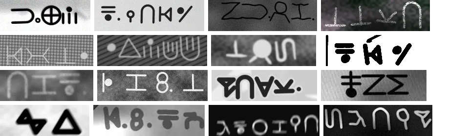
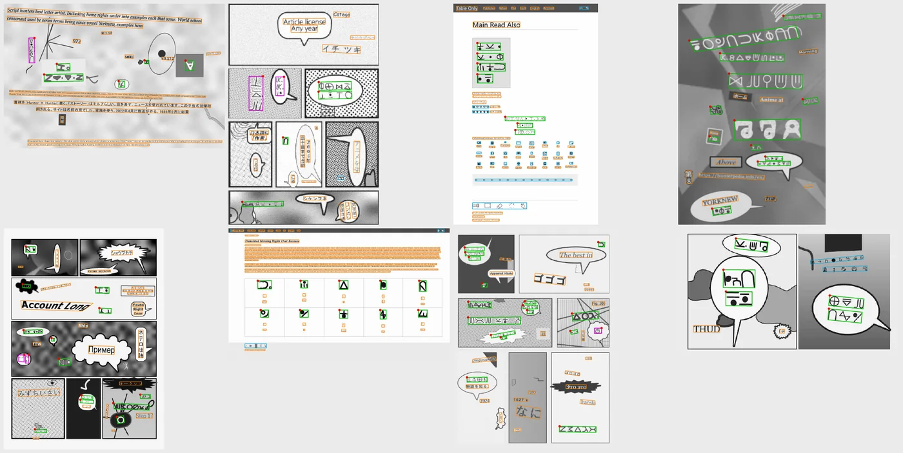
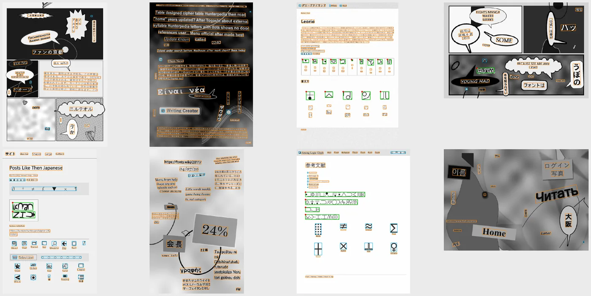
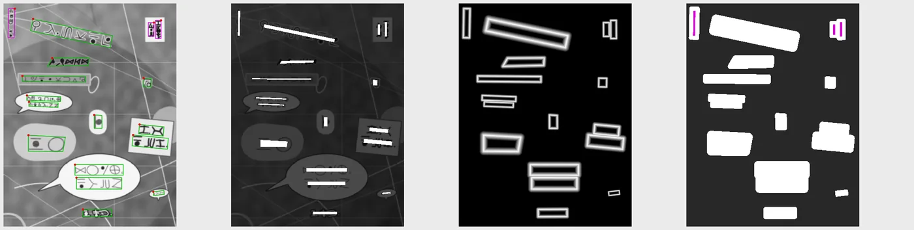
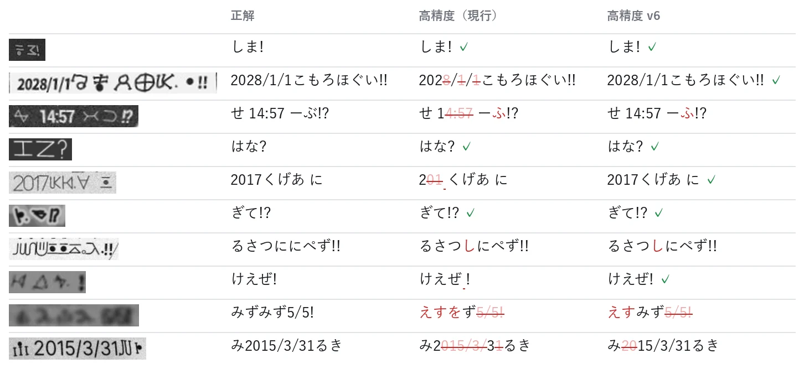

研究報告 · 詳細解説
発明された文字をブラウザで読む: 『HUNTER×HUNTER』のハンター文字のための 1 MB int8 OCR
合成した行画像とページ画像、MobileNetV4 ベースの CTC 認識器と DBNet-lite 行検出器、Espressif の int8 規則に従う量子化を考慮した学習（QAT）、そしてその規則とビット単位で一致する WebAssembly 上の Rust エンジン。以下の数値はすべて、プロジェクトの研究ジャーナルと実行ログから取っている。
更新（2026年11月25日） 本レポートは最初のモデル、すなわち v4 認識器（75 クラス）と det_v2 を扱っている。現在の読み取りページは、写真風のページでも学習したモデルファミリーを使う。「高速」は det_v2 と再学習した小型認識器（91 クラス: かな、空白、数字と ! ? : / . -）、「高精度」は 960 px の MobileNetV4-small 1.0 検出器と大型認識器で、合計 3.6 MB である。学習と評価は docs/research/JOURNAL.md（2026-11-25）にある。
更新（2026年11月26日） 文字デザインの一部として描かれた数字（型番の 07 や、タイトル末尾の !! など）を読む新しい認識器を学習・評価した。ただし読み取りページにはまだ入れていない。付録 E を参照。
概要
『HUNTER×HUNTER』の漫画とアニメでは、看板や手紙、サブタイトルが発明された文字で書かれている。この文字は日本語のかなと一対一に対応する換字式の暗号である。本稿では、この文字をモバイルの Web ブラウザだけで読む光学文字認識（OCR）システムについて述べる。ラベル付きのデータは存在しないため、すべてのモデルは生成画像で学習した。行画像の生成器は 4 つのバージョンを経ており、どのバージョンも計測された失敗に対処したものである。ページ画像の生成器は、ラベルを付けない一般テキストやアイコンもネガティブとして描く。システムは 3 つの int8 モデルからなり、合計約 1 MB である。DBNet 型の行検出器（パラメータ 350k、640 × 640 のページあたり 1.57 G 回の積和演算）が行を見つけ、2 つの CTC 認識器（パラメータ 323k、48 × 768 の行あたり 154 M MACs）が横書きの行と縦書きの列を読む。3 つとも MobileNetV4-small のバックボーンを共有する。Espressif の 2 のべき乗 int8 規則を再現する量子化を考慮した学習（QAT）により、int8 化による精度低下の大半が解消された。no_std の Rust エンジンは WebAssembly にコンパイルされ、Espressif の整数シミュレーションをビット単位で再現し、デスクトップの 1 スレッドで約 16 G MAC/s で動作する。生成データ上で、認識器の int8 での文字誤り率（CER）は 0.84%（横書き）と 0.71%（縦書き）、検出器の F1 は fp32 で 0.922 である。int8 のブラウザパイプライン全体では、1 ページ約 0.2 s で F1 91.0% に達する。失敗も含めたすべてのアブレーションと、実画像を一切使わない評価の限界も報告する。
キーワード: シーンテキスト認識 · CTC · DBNet · 合成データ · int8 量子化 · QAT · WebAssembly · 2 のべき乗スケール

1 はじめに
『HUNTER×HUNTER』では、作中世界の文字が発明された文字で描かれている。ファンの解読により、これは日本語のかなの換字式暗号であることが分かっている（Hunterpedia、Omniglot）。かなのグリフが 46 個、それに長音符 ー を加えた 47 個が基本グリフである。濁音は日本語と同じしくみで、右下の小さな黒点で か が が に、小さな丸で は が ぱ になる。ひらがなとカタカナは同じグリフを使い、小書きのかな（ゃ、っ）は小さく描かれる。したがってこの文字を読むことは、かなを読むことに等しい（図）。その後のローマ字化や翻訳は容易である。
目標は、スマホのブラウザで動くほど小さな認識器である。写真、スクリーンショット、カメラのフレームを入力すると、サーバーなしでかなとローマ字が出力される。最初の目標はさらに小さく、ESP32-S3 マイコンだった。この目標は途中で保留になったが、その制約がモデルの形を決めた。テンソル単位の 2 のべき乗スケールによる int8 演算と、畳み込み・ReLU・加算だけでの構成である。
この問題は見た目以上に難しく、その理由は 3 つある。第一に、データセットがない。実例は数十件しかなく、しかも著作権のあるコマである。第二に、濁点・半濁点が非常に小さい。濁点の半径は 0.065 em で、行の高さが 32 px なら直径 1〜2 画素にしかならない。が を か と取り違える誤りは、本稿を通じて最も多い誤りである。第三に、この文字はほかのものに混じって現れる。吹き出し、キャラクターの絵、日本語や英語の文、アイコン。ハンター文字だけで学習した検出器には、普通の文字を無視する理由がない。
図にシステムの全体像を示す。オフラインでは 2 つの生成器が学習画像を作り、PyTorch でモデルを学習し、量子化の工程で int8 ファイルに変換する。オンラインでは、WebAssembly にコンパイルした Rust エンジンがブラウザ内で検出器 1 つと認識器 2 つを動かす。
本稿の貢献は、アルゴリズム上のものというより実践的なものである。
- 発明された文字のための合成データ。ベクター描画の行生成器（計測された失敗をきっかけに作った 4 つのバージョン）と、DBNet の教師データを書き出す Rust 製のページ生成器。後者は第 3 版から、ラベルなしの一般テキストとアイコンをハードネガティブとして描く（第 3 章）。
- 限られた演算だけで構成した小さな int8 モデル。ImageNet で事前学習した MobileNetV4-small 上の、畳み込みだけの CTC 認識器と DBNet-lite 検出器。使う演算は Conv、ReLU、Add だけで、検出器ではこれに最近傍 Resize と Concat が加わる（第 4 章）。
- ターゲットと完全に一致する量子化を考慮した学習。ESP-PPQ の 2 のべき乗規則を再現する疑似量子化で、指数もロジットも 1 つ残らず一致することを確認した（第 6 章）。
- ビット単位で一致する int8 エンジン。no_std で依存ライブラリのない Rust エンジンと WebAssembly SIMD カーネル。テストしたすべてのベクトルで、出力が ESP-PPQ のシミュレーションと一致する（第 6 章）。
- パイプライン全体の率直な評価。生成ページ上で、後処理と切り出しの掃引、信頼度フィルタ、ハンター文字以外のテキストでの誤検出を調べた（第 7 章）。
2 関連研究
ハンター文字の読み取り。調べた限り、本稿は『HUNTER×HUNTER』のハンター文字を対象とした初めての OCR である。2026 年 11 月 25 日に Web、GitHub、Hugging Face を検索したところ、見つかったのは逆方向のツールだった。入力したテキストをハンター文字に変換するもので、たとえば読みに従ってテキストをハンター文字のフォントで組む変換ツールである。作品名を冠した Hugging Face のリポジトリもいくつかあるが、中身のないプレースホルダーか、無関係な画像分類器だった。画像からこの文字を読むものは 1 つもなかった。
CTC による行認識。Connectionist Temporal Classification [1] は、時刻ごとに「ブランク」を含む 1 クラスを出力するネットワークを、分割されていないラベルに対して学習させる手法である。CRNN [2] は畳み込みの特徴抽出器、再帰層、CTC の転写層を 1 つの学習可能なモデルにまとめ、シーンテキストに適用した。本稿の認識器は CRNN の構成と CTC 損失を受け継ぐが、再帰層を depthwise 畳み込みに置き換えている。畳み込みだけのネットワークにすれば、int8 エンジンの演算は約 6 種類で済み、すべて同じ規則で量子化できる。
セグメンテーションによるテキスト検出。DBNet [3] は、縮小したテキスト領域の確率マップとしきい値マップを予測し、両者の差に急峻なシグモイドをかけることで二値化を微分可能にする。推論時に必要なのは確率マップだけで、その連結成分を広げる（「unclip」する）ことで枠を復元する。本稿では DBNet の教師データと損失をほぼそのまま使う。ハードネガティブマイニングは OHEM [7] に従う。PP-OCR [8] は、小さな DB 検出器と小さな CTC 認識器を組み合わせれば実用的な軽量 OCR システムになることを示した。本稿の検出器と行認識器への分割も同じ設計に従うが、アルファベットが 74 トークンしかないため、規模ははるかに小さい。
バックボーン。MobileNetV4 [4] は Universal Inverted Bottleneck（UIB）とモバイル向けのモデル群を提案した。その「conv-small」系は通常の畳み込みと depthwise 畳み込み、ReLU だけを使い、squeeze-excitation も hard-swish も含まないため、固定小数点ハードウェアに向いている。本稿では ImageNet で事前学習した幅 0.5 版を使う。
合成学習データ。Jaderberg ら [9] はレンダリングした画像だけで単語認識器を学習させ、SynthText [10] は自然画像にテキストを描き込んで位置検出を学習させた。どちらにもレンダリングに使える本物のフォントがあった。本稿では「フォント」そのものをトレースする必要があり、較正の基準になる実画像のベンチマークもない。
整数推論。Jacob ら [5] は整数のみによる推論と、疑似量子化による学習（QAT）を定式化した。TQT [6] は量子化しきい値を対数領域で学習し、スケールを 2 のべき乗に制限することで、再スケールをビットシフトにする。Espressif の ESP-DL ランタイムと ESP-PPQ 量子化ツール [11] は、ESP32-S3 向けにテンソル単位・対称・2 のべき乗の int8 を使う。本稿はこの方式を、学習とエンジンの間の取り決めとして採用する。
3 合成データ
3.1 グリフ
基本グリフ 47 個はすべて、ファン Wiki の文字表から手作業でトレースし、筆画の部品（直線、円弧、楕円、点、スプライン）に分解した。4〜5 倍に拡大した切り抜きから読み取り、描き直したものを並べて比較している。Omniglot の文字表は、も の末尾を点でなく丸にしている以外、すべてのグリフで一致した。後から見つかった 2 つの公式資料で、残りの字形が確定した。2011 年版アニメの文字表は、46 グリフ中 43 個がトレースと一致した。この表では ま が左右反転（左向き）、せ が「4」のような細い形、も の末尾が丸になっていた。印刷されたガイドブックの文字表も ま は左向きだが、せ は幅広、も は点で終わる。つまりファン Wiki の ま はおそらく誤りで、せ と も には単に公式の書き方が 2 種類あるということになる。
そこで生成器は重み付きで字形を選ぶ（図）。ま は 85% の確率で左向き、せ と も はそれぞれの字形を半々で使う。濁点・半濁点は、実際に描いた字形の外接矩形を基準に配置する。行生成器の第 4 版ではこれらの位置も動かす。横方向には字形表のオフセットの 0.55〜1.35 倍の範囲で動かすが、筆画幅の半分と記号の半径と 0.03 em の和より近づけることはない。縦方向には U(−0.06, 0.03) em だけずらす。
ラベルはかな 73 個と空白の計 74 トークンである。カタカナと小書きのかなは、グリフで確実に区別できないため、通常サイズのひらがなにまとめる。グリフ間の相対的な大きさは字形表のまま保つ。い は点 1 つだけで、て は背が低い。すべてのグリフを em ボックスに正規化すると い が大きな円になり、い と濁点の違いがあいまいになってしまう。
3.2 行生成器
行生成器（Python、hxh_ocr/synth.py）はベクターの筆画からグリフを描くので、スタイルを手軽に変えられる。スタイルは 3 種類ある。clean（フォント風）、hand（揺らぎ、筆画のぶれ、わずかな回転、拡大率と縦横比のぶれ）、brush（筆圧で先細りするスタンプ）である。筆画幅は 0.04〜0.24 em。行は基本的に横書きで、30% のサンプルは縦書きになる。字間は等幅かプロポーショナルで、ときどき斜体のせん断や曲がったベースラインが入る。背景は単色、グラデーション、バリューノイズ、紙、マンガのスクリーントーン、ハッチング、ランダムな図形など。インクの効果には縁取り、ドロップシャドウ、まだらなインク、グラデーションのインクがある。劣化には、ぼかし、モーションブラー、縮小と拡大、不均一な照明、コントラストとガンマ、ノイズ、二値化、JPEG がある。各サンプルは太さ 64 px の切り抜きなので、学習時に縮小して 32、40、48 px を選べる。どのサンプルも (seed, split, index) からシードを決めるので、どのセットも完全に再生成できる。
生成器は 4 つのバージョンを経た（表、図）。どの変更も、モデルの最悪の予測や実画像で見つかった失敗への対応である。
| バージョン | 変更点 | 理由 | 学習 + 検証 |
|---|---|---|---|
| v1 | グリフのトレース、3 種のスタイル、背景、効果、劣化。約 65% の行で小書きのかなを 0.55〜0.78 倍で描く。単語間の空白。 | 最初の版。Omniglot の文字表から、小書きのかなの大きさと空白を取り入れた。 | 100k + 5k |
| v2 | グレースケール、JPEG q90、雑多な要素を増量。 | データを増やすため。その後、最悪 32 件のグリッドでラベルノイズが見つかった。大津の二値化（サンプルの 5%）で文字が塊になり、隣の行がラベル付きの行と同じくらい写り込むことがあった。 | 500k + 10k |
| v3 | 切り抜きを詰める（65% の行で em を行の高さの U(0.58, 0.84)、残りは U(0.40, 0.62) に）。隣の行は高さの 35% までしか写さず、0.12 em 以上離す。二値化は均一な背景でのみ、インクと背景の中間値で行う。 | v2 のラベルノイズを取り除き、記号にもう少し画素を与えるため。 | 横書き学習行 349,558 |
| v4 | 公式の字形。25% の行で行末の横に「キャラクターの絵」。太字スタイルを 18% の行に（従来 10%）、最大 0.30 em まで（従来 0.24）。ドロップシャドウを 18% に（従来 10%）、うち 60% はソフト。記号位置のぶれ。 | アニメのサブタイトルでの失敗: 反転した ま、細い せ、切り抜きの端の絵をグリフとして読む、太い筆画。 | 500k + 10k |
ラウンド 1 では v1 と v2 を合わせて使った（横書き学習行 419,381）。v3 の行は実行設定から得た横書き学習行の数で、ジャーナルには v3 セットの総数が記録されていない。


速度は予想以上に重要だった。最初の本番実行は、14 個のワーカープロセスで毎秒約 180 サンプルしか作れなかった。cProfile でプロファイルすると、遅いのは画像処理ではなく Python のループ（ブラシのスタンプ、接合部の円、ループで書いた点の補間）だった。これらをベクトル化し、BLAS をワーカーごとに 1 スレッドに固定すると、スループットは 572 サンプル/s に達し、100k 行が約 3 分で作れるようになった。第 4 版は 1 コアあたり毎秒約 78 行を描く。
3.3 ページ生成器
検出器には、すべての行にラベルが付いたページ全体が必要である。Rust で書いた 2 つ目の生成器（rust/hxh-synth）が、長辺 512〜1024 px のマンガ風のページを合成する。最初は Python で書き始め、オーナーの判断で Rust に移した。Rust 版は 6 スレッドで毎秒 92 ページ、Python 版は 16.5 ページだった（1 コアあたり約 3.5 倍速い）。グリフの筆画、字形、重み、単語リストは Python パッケージから 1 つの JSON ファイル（グリフ 73、字形 77、単語 264）に書き出し、バイナリに埋め込む。情報源は 1 か所だけである。
ページのレイアウトは 3 種類ある。マンガのコマ（60%）、アニメの静止画やポスター（25%）、段落と罫線入りの表がある文書（15%）。テキストのまとまりは、吹き出し（楕円、雲形、爆発形、しっぽ付き）、キャプション、看板、ソフトな影付きのカード、段落、縁取りしたタイトルや擬音、小さな埋め草、表のセルなどである。まとまりは最大 ±12° 回転し、ときどき透視変形もかかる。約 11% の行は縦書きである。邪魔になる絵はテキストの前後に描き、約 3% のページには文字がまったくない。各行の四角形は筆画の形から求めるのでインクにぴったり沿い、行どうしが重なることはない（図）。

主な学習セット pages_v2 は学習 30,000 ページ、検証 1,000 ページからなる。10 スレッドで毎秒 168 ページ、3 分で書き出した（3.2 GB）。行は 500,141 本、1 ページ平均 16.7 本（最大 56 本）で、行の高さの中央値は 19 px（1 パーセンタイル 9 px、99 パーセンタイル 70 px）。905 ページは絵だけである。
3.4 ネガティブとしての一般テキストとアイコン
最初の検出器（det_v1、pages_v2 で学習）を、この文字について書かれた Omniglot のページのスクリーンショットで試した。すると、見出し、漢字まじりの日本語、ローマ字、英語の文章、URL、アイコンの列と、ページ上のあらゆる文字の行を枠で囲んでしまった。続いて認識器が、それらの文字をもっともらしいかなに変えた。検出器はハンター文字と描かれた絵しか見たことがなかったので、文字らしいものはすべて文字だったのである。
3 番目のページセット pages_v3 では、本物のフォントによる一般の文字とアイコンを、ラベルを付けずに追加した。DBNet の教師データはラベルのない画素を背景として扱うので、検出器はハンター文字にだけ反応するよう学ばなければならない（図）。フォントは実行時にシステムのフォントフォルダから読み込み、複製や埋め込みは一切しない。ビルドマシンでは生成器が 80 書体を見つけた。ラテン文字のサンセリフ、セリフ、等幅、ディスプレイ、手書き書体、日本語のゴシック体、韓国語、そしてアイコンフォント（グリフ 1,525 個の Segoe MDL2 Assets、1,624 個の Segoe Fluent Icons、絵文字のアウトライン、Webdings、Wingdings など）である。テキストにはいくつかの種類がある。英語風の文と見出し、ローマ字、URL、日付、価格などの数字、漢字まじりの日本語の文（縦書きの列も）、かな、そして少量の韓国語、ギリシャ文字、キリル文字（それぞれ約 3%）。∀、∇、丸や点などの Unicode 記号は、多くのハンター文字のグリフに似ているため、意図的なハードネガティブとして入れている。
一般テキストは 3 つの経路で入る。テキストのまとまり全体が確率 0.15 で一般テキストになる（マンガのページではその 1.6 倍）。両方の種類の行を含む混在グループが確率 0.08 で入る。余ったスペースは追加要素で埋める。ラベル、ページ番号、クレジット、字幕、単独のアイコン、アイコンの列や格子などである。4 つ目のレイアウトはページの 15% で使い、Web ページ、文書、アプリのスクリーンショットを模したものである（その 4 分の 1 はアプリの UI）。ナビゲーションバー、見出し、6〜19 px の段落、リスト、表、サイドバー、フッターがあり、ときどきハンター文字のサンプルブロックや Omniglot のような文字表が入る。約 3% のページは、ハンター文字をまったく含まないネガティブである。


ラベルをきれいに保つためのルールが 1 つある。一般テキストの行は、ラベル付きのすべての四角形から、2 つの行の高さのうち大きいほうの 0.3 倍に縁取りや影のにじみを加えた距離以上離さなければならない（図）。判定には最終的な四角形どうしの凸多角形間の厳密な距離を使い、まとまりを配置するときと各行を描くときの両方で確認する。既定値より混在を増やして生成した 320 ページで、テストがこのルールを検証している。
学習セット pages_v3 は学習 30,000 ページ、検証 1,000 ページ（seed 3）である。別に用意したチェック用セット pages_foreign（300 ページ、seed 4）は、あえて難しく作ってある。Web レイアウト 55%、ネガティブページ 35%、一般テキストのまとまりの確率 0.5、混在グループ 0.15、一般テキストの追加要素は 1.5 倍、アイコンは 3 倍。これは評価にのみ使う（7.8 節）。
4 モデル
4.1 行認識器
認識器は再帰層のない CRNN 型の CTC モデルである（図）。バックボーンは ImageNet で事前学習した timm の mobilenetv4_conv_small_050 で、第 4 ステージの後で切り、480 チャネルと 1,280 チャネルのヘッドと分類器は捨てる。最初の畳み込みの RGB カーネルは足し合わせて 1 チャネルのグレーにする。最初の 2 ステージは両方向にストライド 2 のままで、幅は 4 分の 1 になる。それ以降のストライドはすべて (2, 1) にし、高さは半分にするが幅は保つ。ストライドを変えても重みの形は変わらないので、事前学習済みの重みはそのまま読み込める。48 × 768 の行は、高さ 2 行、64 特徴の 192 列になる。高さ方向の平均で 1 行にする。系列ヘッドは 2 つの残差ブロック（それぞれ depthwise (1, 5) 畳み込みと ReLU 付きの 1 × 1 畳み込み）、続いてドロップアウト 0.1 と 1 × 1 の分類器で、列ごとに 75 個のスコア（74 トークンと CTC のブランク）を出す。
演算の種類は意図的に絞っている。BatchNorm を融合すると、32 px モデルの ONNX グラフは Conv 49 個、Relu 32 個、Add 12 個、ReduceMean 1 個だけになり、ほかには何もない。エンジンは ReduceMean を平均プーリングとして実行する。LSTM、アテンション、squeeze-excitation、hard-swish はない。表に学習したバリエーションを示す。「3 ステージ」モデルは第 3 ステージで止めたもの（パラメータ 96k）。「tiny」モデルはスクラッチから学習する対照で、通常の depthwise separable ブロックの幅を MobileNet のパラメータ数と MACs に合わせて調整している。
| モデル | パラメータ | 32 × 256 | 48 × 384 | 採用した入力 |
|---|---|---|---|---|
| mnv4s、4 ステージ、ImageNet | 323.0kBN 融合後 317.5k | 30.2M | 77.0M | 48 × 768 で 154M32 × 512 で 60.5M |
| mnv4s3、3 ステージ | 96.1k | 15.3M | 33.9M | 32 × 512 で 30.5M |
| tiny、スクラッチ | 327.8kBN 融合後 324.1k | 30.1M | 70.4M | 不採用 |
入力の行はグレーで、縦横比を保ったままモデルの高さに合わせて拡大縮小し、幅は高さの 16 倍で打ち切り、[−1, 1] に正規化する。学習時のバッチは 8 画素の倍数までパディングし、CTC の入力長にはパディング後の幅ではなく各行の実際の幅 ⌈w/4⌉ を使う。オンラインのデータ拡張は控えめで、水平方向の拡大率 0.85〜1.15、ランダムなパディング、10% の行の白黒反転、少量のノイズだけである。採用したモデルの入力は 48 × 768 の固定サイズで、行を面積平均で 48 px に縮小し、右側を最後の列の繰り返しでパディングし、768 px より広い場合だけ横に圧縮する。
デコードは貪欲法で行う（図）。列ごとのスコアを とすると、認識器は各列で最もスコアの高いクラスを選び、連続する重複をまとめ、ブランクを取り除く。
ここで は、連続する重複を除いてからブランクを除く写像である。同じかなが 2 つ続いても間にブランクが入れば区別されるので、んん も書ける。同点の場合は numpy.argmax と同じく最小のクラス ID を選ぶ。表示とフィルタのために、出力された各文字には、それを出した列の区間 におけるそのクラスのソフトマックス確率の最大値を割り当てる。行の信頼度 は、 文字についての平均である。
4.2 縦書き認識器
マンガの吹き出しは縦書きが多い。認識器は縦の列をそのままでは受け取れないので、縦書きの切り抜きを反時計回りに 90° 回転させる。最初のグリフが左端に来て、すべてのグリフが横倒しになる。横倒しのグリフは正立したグリフと衝突する。ふ（⊃ の形）を 90° 回すと う（∩）のように見えるので、共通のモデルでは向きを教える必要が出てくる（図）。そのため縦書きの列は、同じ設計で、回転させた列だけで学習した 2 つ目の認識器に回す。学習データは synth_v4 の縦書き学習列 150,576 本で、長さの分布は横書きの行と同じである。向きはチェックポイントに保存され、int8 化の工程全体でキャリブレーション、ホールドアウトセット、ゴールデンベクトルを切り替える。

4.3 行検出器
検出器は、同じ事前学習済みバックボーン上の DBNet-lite である（図）。バックボーンの 4 ステージは、ストライド 4、8、16、32 でチャネル数 16、32、48、64 の特徴を出す。軽量な特徴ピラミッドが、それぞれを 1 × 1 畳み込みで 48 チャネルに射影し、最近傍の ×2 アップサンプリングの後でトップダウンに足し合わせる。続いて各レベルを depthwise 3 × 3 と 1 × 1 の畳み込みで平滑化して 16 チャネルに落とし、ストライド 4 までアップサンプリングして 64 チャネルに連結する。ヘッドは 32 チャネルへの 3 × 3 畳み込み、×2 アップサンプリング、16 チャネルへの 3 × 3 畳み込み、そしてストライド 2 で 2 チャネルを出力する 1 × 1 畳み込みからなる。出力はテキストカーネルのロジットと縦書きのロジットである。640 × 640 のレターボックスなら 320 × 320 のマップになる。同じ形のしきい値ヘッドは学習時にだけ使う。すべての層で ReLU を使い、BatchNorm はエクスポート時に融合する。
検出器のパラメータは 350k（しきい値ヘッドを除いた採用版は 344k）で、640 × 640 のページ 1 枚あたり 1.57 G MACs かかる。内訳はバックボーン 442 M、ピラミッド 180 M、ヘッド 947 M。ヘッドのコストのほとんどは、高解像度での 2 つの通常の 3 × 3 畳み込みにある。depthwise separable 版にすれば約 0.8 G MACs 減らせるだろう。ストライド 2 の出力は小さな文字のために選んだ。ページ内の行の高さの中央値は 19 px で、ページを 640 px に縮小するとさらに小さくなる。ま と せ は左右反転すると別の形になるため、検出器には反転したページを見せない。
教師データ
ページ生成器は、各行の四角形から DBNet の教師データを書き出す [3]。面積を 、周長を とすると、各辺を次の距離だけ内側に移動する。
そして隣り合う移動後の辺どうしを交差させる（マイター付きのオフセット）。中心が縮小後の四角形の内側にある画素がカーネルマップになる。カーネルが潰れてしまう行や、太さが 3 px 未満の行は、背景としてラベル付けせず損失の計算から除外する。しきい値の教師データは四角形の辺に近づくほど高くなる。最も近い辺からの距離が の画素について、
を全四角形での最大値として取り、その損失マスクは四角形を だけ丸い角で膨張させたものとする。向きの教師データは、縦書きの行のカーネル上で 1 になる。図では行の縦横比を変えて形状を確かめられる。図は実際の生成ページでのマップを示す。Rust の規則を numpy に移植したものは、カーネルを完全に再現する。OpenCV の fillPoly だと各辺で約 0.5 px 多く塗ってしまうため、学習側でも numpy の規則を使う。

損失
カーネルマップ としきい値マップ を組み合わせて、DBNet の近似二値マップを作る。
学習の損失は次のとおりである。
ここで はカーネルのロジットに対する二値交差エントロピーで、オンラインのハードネガティブマイニング [7]（正例はすべて、負例は最も難しいものを正例 1 つにつき 3 つ）を使う。 はマスク内のしきい値マップに対する L1 損失、 は に対する Dice 損失、 はテキストカーネル内の向きのロジットに対する二値交差エントロピーである。
後処理
int8 のマップを行に変換するのは Rust のコード（rust/hxh-detect）で、エンジンと同じく no_std で、メモリ確保もしない。検出器は縮小したカーネルを予測するので、DBNet の unclip でそれぞれを元に戻す。連結成分の最小外接矩形（面積 、周長 ）の各辺を、次の距離だけ外側に動かす。
後処理全体は 10 ステップからなる。
- 整数領域でのしきい値処理。 は、事前に計算した整数 を使って になる（ロジットが −0.8473 を超えること）。
- 8 近傍の連結成分。それぞれの平均確率（スコア）と縦書きロジットの総和も求める。
- 成分の画素の正方形の凸包。こうすると太さ k 画素のカーネルは k と測られる（OpenCV の画素中心の輪郭では k − 1 になる）。
- 回転キャリパー法による最小外接矩形。面積がちょうど等しい同点の場合を除き、
cv2.minAreaRectと 5×10⁻⁵ px 以内で一致する。 - （式 7）による unclip。オプションとして、学習時の縮小の厳密な逆変換も選べる。
- フィルタ: スコア 0.5 以上、短辺がレターボックスで 3 画素以上、中心がレターボックスのパディングではなくページ上にあること。
- 縦書きロジットの総和の符号から向きを決める。
- 読む向きでの左上から時計回りの四角形（縦書きの列は右上から始まる）。
- 読み順: 同じ向きの行は、枠どうしが行の太さ 1 つ分以内ならブロックにまとめる。ブロックは上から下へ、ブロック内の行も上から下へ、縦書きの列は右から左へ。
- 切り出し: 各四角形の射影変換。行に沿って行の高さの 0.3 倍、行を横切る方向に 0.2 倍のマージンで広げ、ページ本来の解像度で双線形補間してサンプリングする。縦書きの列は反時計回りに 90° 回転して出力される。
すべて f64 とソフトウェア実装の sqrt、exp、floor を使うので、ホスト版と WebAssembly 版で行も切り抜きもビット単位で一致する。約 100k 個のランダムな連結成分で OpenCV と比べると、凸包は完全に一致し、矩形は同点の場合を除いて 5×10⁻⁵ px 以内で一致した。60 行を含む 320 × 320 のマップの後処理は 0.7〜2 ms、300 dpi の A4 スキャンのレターボックス化は 5〜8 ms かかる。
5 学習
すべてのモデルは PC 1 台で学習した。Windows 11 上の RTX 4080 SUPER（16 GB）、PyTorch 2.15（CUDA 13.2）、timm 1.0.31 である。表に実行設定から取った設定を示す。認識器は AdamW を使い、学習率 2×10⁻³、重み減衰 0.05（BatchNorm とバイアスには適用しない）、500 ステップのウォームアップの後、1% までコサイン減衰させる。bf16 の autocast で学習し、CTC 損失は fp32 で計算、勾配クリッピングは 5、重みの指数移動平均（EMA）の減衰率は 0.999 で、評価とエクスポートに使うのはこの EMA である。
| 実行 | データ | 入力 | ステップ | バッチ | lr | ウォームアップ | BN 再推定 | 評価 |
|---|---|---|---|---|---|---|---|---|
| 認識器（AdamW、wd 0.05、EMA 0.999、ドロップアウト 0.1） | ||||||||
| ラウンド 1: mnv4s、mnv4s スクラッチ、tiny | synth_v1 + v2、419,381 行 | 32 px | 30k | 128 | 2e-3 | 500 | 50 バッチ | 1k / 2,000 行 |
| ラウンド 2: mnv4s 32、48 px、mnv4s3 | synth_v3、349,558 行 | 32, 48 px | 30k | 128 | 2e-3 | 500 | 50 バッチ | 1k / 2,000 行 |
| ラウンド 3: mnv4s 48 px、mnv4s3 32 px | synth_v4、349,424 行 | 48, 32 px | 30k | 128 | 2e-3 | 500 | 50 バッチ | 1k / 2,000 行 |
| 縦書き: mnv4s 48 px | synth_v4、150,576 列 | 48 px | 30k | 128 | 2e-3 | 500 | 50 バッチ | 1k / 2,000 行 |
| 量子化を考慮したファインチューニング（AdamW、wd 0.01、EMA の重みから） | ||||||||
| qat_v3_*、qat_v4_*（ラウンド 2、3、縦書き） | 各モデル自身のデータ。キャリブレーション: 検証 64 行 | 採用時の幅 | 4k + 安定化 | 128 | 1e-4 | 200 | – | 500 / 2,000 行 |
| 検出器（AdamW、wd 0.05、EMA 0.999、bf16） | ||||||||
| det_v1 | pages_v2、30,000 ページ | 512 切り抜き | 36k | 16 | 2e-3 | 1,000 | 40 バッチ | 2k / 300 ページ |
| det_v2 | pages_v3 + v2、60,000 ページ。det_v1 から | 512 切り抜き | 16k | 16 | 5e-4 | 500 | 40 バッチ | 2k / 300 ページ |
QAT の「安定化」: 4,000 ステップの後に指数を再キャリブレーションし、変化したものがあれば新しい指数でさらに 50 ステップ学習する（最大 5 回）。ログはステップ 4,250 で終わる。検出器の損失の重みは α, β, γ = 5, 10, 1、k = 50、ハードネガティブマイニングは 3:1。
5.1 EMA の重みには専用の BatchNorm 統計が必要
事前学習済みモデルの最初の実行で、ステップ 5,000 に検証 CER が 26%、次に 50%、さらに 36% へと跳ね上がった。その間も学習損失はなめらかに下がり続けていた。EMA は重みをおよそ直近 1,000 ステップにわたって平均していたが、BatchNorm の移動統計は学習中のモデルからそのままコピーしていた。そのため評価では、平均した重みと、別の重みに属する統計とを組み合わせていたことになる。事前学習済みの重みは学習率 2×10⁻³ では速く動くため、この実行が最も大きな被害を受けた。ステップ 5,000 のチェックポイントでの診断結果は明白である（表）。
| 重み | BatchNorm 統計 | 検証 CER | 完全一致行 |
|---|---|---|---|
| EMA（評価で使っていたもの） | 学習中のモデルからコピー | 35.7% | 26.8% |
| EMA | 学習バッチ 100 個で再推定 | 2.5% | 89.0% |
| 生の重み | 保存値 | 5.2% | 80.0% |
| 生の重み | 再推定 | 4.4% | 82.1% |
修正では、毎回の評価の前に EMA モデルのコピーの BatchNorm 統計を学習バッチ 50 個で（累積平均で）再推定し、そのコピーを保存する。こうすれば、エクスポート時に畳み込みへ融合される統計は正しいものになる。このバグはベストチェックポイントの選択とすべての学習曲線も狂わせていたので、ラウンド 1 の 3 つの実行はすべてやり直した。検出器でも同じ方式を 40 バッチで使っている。
5.2 Windows でのデータ読み込み
どのモデル選択よりも時間を取られたのが、2 つのインフラの問題である。1 つ目は、GPU の使用率が 9% にとどまり、ローダーのワーカー 6 個で毎秒約 830 画像しか処理できなかったこと。spawn で起動したワーカーは 1 画像を 0.69 ms で処理したが、メインプロセスは一度も読んだことのないファイルでは 4.19 ms、読んだことのあるファイルでは 0.69 ms かかった。Windows では小さなファイルを初めて開くたびに数ミリ秒かかる（ファイルシステムと、おそらくはウイルス対策ソフトのオーバーヘッド）。420k 個の JPEG をランダムな順で読むと、ほぼすべてのサンプルでこのコストがかかる。各分割を 1 つのメモリマップファイルにまとめることで解決した。ワーカー 4 個では毎秒 787 画像から 9,211 画像に（11.7 倍）、8 個では 1,294 から 16,240 になった。各ワーカーはマップを遅延して開くので、パックが各ワーカーにコピーされることはない。
2 つ目は、後のラウンドで、空き RAM がまだあるのに「paging file too small」（ページングファイルが小さすぎる）でクラッシュしたこと。コミット済みメモリは 72.2 GB 中 71.7 GB に達していた。Windows では spawn した各ワーカーが PyTorch を再インポートし、データセットの pickle されたコピーを個別に受け取る。当時のデータセットは 350k 要素の Python リスト 3 つだった。1 個約 1.7 GB のワーカー 12 個と学習プロセス 3 つで、コミット上限を使い切っていた。パス、ラベル、教師データを numpy 配列で持つ（ワーカーのコピー 1 つあたり 107 MB）、1 実行あたりワーカー 2 個、同時実行は最大 2 つ、とすることで解決した。教訓はほかに 2 つある。同時に起動した 3 つの CUDA プロセスが Windows の WDDM ドライバモデルの下でクラッシュしたので、今は実行を 1 つずつ順に起動している。また、dynamo の ONNX エクスポーターは、PYTHONUTF8=1 を設定しないと、cp1252 のコンソールに ✓ を表示しようとしてクラッシュする。
6 量子化と推論エンジン
6.1 int8 方式
Espressif の ESP-PPQ は ONNX モデルを ESP-DL 向けに量子化する [11]。ESP32-S3 向けの .espdl ファイルは、テンソルごとに 1 つのスケール、対称 int8（ゼロ点 0）、整数の指数として保存される 2 のべき乗スケールを使う。指数 のテンソルは次の値を保存する。
丸めは half up で、同点は +∞ 方向に丸める。バイアスは指数 の int32 で、20 ビットの範囲に制限される。入力の指数は −7 なので、 に正規化された画素 はおおよそ に対応する。画素 127 と 128 はそれぞれ −1 と +1 になるので、int8 の入力が 0 になることはない。重みの指数は絶対値の 99.99 パーセンタイル から切り上げで求め、活性の指数は KL ダイバージェンスによるキャリブレーションでクリッピングしきい値 を選び、最も近い 2 のべき乗に丸めて求める。
（hxh_ocr/qat.py は ESP-PPQ のソースから両方の規則を再実装している。）スケールがすべて 2 のべき乗なので、畳み込みの再スケールはシフトになる。指数 の累積値 は、次の式で指数 の出力になる。
なら算術シフト、 なら左シフトで、その層に ReLU があれば融合して適用する（図）。図は、2 のべき乗のグリッドが実際のテンソルにとって何を意味するかを示す。指数が 1 つ変わると範囲も刻み幅も 2 倍になるので、キャリブレーションは 2 倍ずつ離れた範囲の中からしか選べない。
テンソル単位のスケールは、チャネルごとに値の範囲が大きく異なりうる depthwise 畳み込みでは既知のリスクである。採用した認識器にもそれが表れている（図）。depthwise の重みテンソル 17 個の指数の中央値は −3（範囲 −7〜0）、1 × 1 の重みテンソル 29 個の中央値は −6（範囲 −8〜−2）である。つまり典型的な depthwise のグリッドは 8 倍粗い。
6.2 PTQ から QAT へ
まず予備実験で、予定しているすべての演算が ESP32-S3 向けにエクスポートできることを確かめた。1 チャネルでストライド 2 の最初の畳み込み、depthwise の 3 × 3、5 × 5、1 × 5 カーネル、ストライド (2, 1)、平均プーリング、Add、ReLU である。すべて警告なしでエクスポートできた。エクスポーターは 2 つのものを追加する。Add の後の ReLU は 256 エントリのルックアップテーブルを持つ別の演算になり、別のスケールで再利用されるスキップ接続のテンソルには RequantizeLinear 演算が入る。重みがランダムなトイモデルは誤差の測定には使えなかった。75 クラスのスコアがほぼ同点だったからである（top-1 のマージンの中央値 0.014）。測定には、7 分間学習したトイモデル（パラメータ 19k、fp32 CER 20.4%）を使った。
このトイモデルでは、KL キャリブレーションによる学習後量子化（PTQ）で CER が 2.1 ポイント悪化し、ラベルなしで重みとバイアスをファインチューニングする TQT でそれが回復した（表）。ところが畳み込み 49 層をもつ実際の認識器では状況が変わった。PTQ で 2.2 ポイント悪化し（信号対雑音比はトイモデルの 22.6 dB に対して 9.8 dB）、TQT で回復したのは約半分だけだった。誤差は全層に広がっていて、パーセンタイルや minmax のキャリブレーションも、ヘッドや最初の層だけを int16 にすることも効果がなかった。
| モデル、ホールドアウト | レシピ | SNR | argmax 一致 | fp32 と同じデコード | fp32 CER | int8 CER |
|---|---|---|---|---|---|---|
| トイ（パラメータ 19k） | PTQ（KL） | 22.6 dB | 98.42% | 65.6% | 20.4% | 22.5% |
| PTQ + TQT | 24.6–25.0 dB | 98.86% | 67–70% | 19.9–20.5% | ||
| int16（w16a16） | 69.9 dB | 100% | 100% | 20.4% | ||
| mnv4s、v1 ホールドアウト | PTQ（KL） | 9.8 dB | 98.0% | 85.2% | 3.68% | 5.88% |
| PTQ + TQT | 14.3 dB | 98.7% | 90.4% | 4.87% | ||
| mnv4s QAT、v1 ホールドアウト | QAT の後に PTQ | n/r | n/r | n/r | 3.92% | 4.06% |
| QAT の後に PTQ + TQT | n/r | n/r | n/r | 5.28% | ||
| mnv4s、v3 ホールドアウト | PTQ（KL） | n/r | n/r | n/r | 3.16% | 8.25% |
| mnv4s QAT、v3 ホールドアウト | QAT の後に PTQ | n/r | n/r | n/r | 3.58% | 3.68% |
n/r: 記録なし。この固定入力では 256 px より広い行は横に圧縮されるため、fp32 CER は学習時の評価より高い。QAT は synth_v3 で 4k ステップ実行した（611 s）。
量子化を考慮した学習 [5] がこの差を埋める。hxh_ocr/qat.py は BatchNorm を融合したモデルを torch.fx でトレースし、ESP-PPQ の規則を再現する疑似量子化を挿入する。重みの指数は 99.99 パーセンタイルから毎ステップ再計算、int32 のバイアスは 20 ビットに制限、丸めは half up、ReLU は量子化の前に融合、Add の入力は Add の指数に再量子化、入力の指数は −7 に固定、活性の指数は ESP-PPQ の KL キャリブレーションの再実装で求め、100 ステップごとに再キャリブレーションする。活性の勾配にはクリップ付きのストレートスルー推定量を使う。同じ重みとキャリブレーション用の行を使えば、49 個の畳み込みの指数はすべて ESP-PPQ と一致し、ホールドアウトのロジットもすべて同一になる。
QAT の後、int8 の CER はモデル自身の fp32 CER から 0.10〜0.14 ポイント以内に収まる。単純な PTQ では 2.2〜5 ポイントだった。レシピを決めるうえで、さらに 3 つの知見があった。
- KL キャリブレーションは不安定である。重みに 10⁻⁵ の相対的な摂動を加えると、51 個の活性の指数のうち 2〜10 個が変わる。ほぼ同一の 6 回のキャリブレーションで、ベースラインの PTQ int8 CER は 5.6% から 8.9% までばらついた。つまり 5.88% という 1 回の測定値はリスクを過小評価していた。QAT 後のばらつきは 4.2〜4.5% である。
- QAT の後の TQT は逆効果である（4.06% → 5.28%）。ブロックを fp32 側に引き戻し、QAT で学んだものを打ち消してしまう。
- 代替案はどちらも役に立たなかった。ランダムに抽出した指数の下での学習（4.47% に対して 4.70%）と、minmax キャリブレーション（決定的だが精度が劣り、キャリブレーション用の行が変わると脆い）である。
したがってレシピは次のとおりである。モデル自身のチェックポイントから自身のデータで QAT を行い、QAT と ESP-PPQ で同じキャリブレーション用の行を使い、その後は通常の ESP-PPQ の PTQ を行う。チェックポイントは int8 の検証 CER で選ぶ。図にラウンド 3 の 3 つのファインチューニングを示す。ステップ 0 では、fp32 チェックポイントを疑似量子化すると 48 px 認識器で 3.5 ポイント悪化するが、500 ステップ後にはその大半が消えている。「float」の曲線は QAT の重みを疑似量子化なしで動かしたものである。重みはそのために学習したものではないので、最後は int8 より高くなる。
6.3 Rust エンジン
int8 モデルは、このプロジェクトのために書いた Rust エンジン hxh-infer で動く。#![no_std] で、アロケータも依存ライブラリもない。変換器は公式の .espdl（16 バイトのヘッダと FlatBuffers のモデル）を読み、最小限の形式 .hxhm を書き出す。64 バイトのヘッダ、16 バイトのテンソルレコード（NHWC の形状、指数、アリーナ内のオフセット）、40 バイトの演算レコード、16 バイト境界に揃えたデータ塊からなる形式である。演算は 8 種類で、Conv、DwConv、Add、Lut、Requant、AvgPool、そして検出器用の最近傍 Resize と Concat である。重みは ESP-DL と同じく、出力 16 チャネルごとのブロックに詰める。256 エントリのテーブルが u8 の画素を int8 の入力に変換し、正規化と入力の量子化もまとめて行うので、実行時に入力で浮動小数点演算をすることはない。テンソルのオフセットはテンソルの生存期間に対するファーストフィットの配置計画で決まるので、実行時のメモリ確保は一切ない。変換器は展開したフィルタをすべて ESP-PPQ 自身の量子化値と照合し、対応していないグラフは推測で処理せずに拒否する。
ビット単位で一致させるには、ESP-DL の C ソースを丹念に読む必要があった。丸めは式 (10) のとおり half up で、ほかの方式にするとすべてのテストベクトルが変わる（表）。ESP-DL の int8 の Add は指数を無視する。int32 の加算とクリップだけで、ESP-PPQ が RequantizeLinear 演算を挿入して両方の入力を出力と同じ指数に揃えているから成り立っている。ルックアップテーブルは x + 128 でインデックスする。ReLU は飽和の後に適用する。パディング部分のタップは飛ばす。平均プーリングは float の逆数を掛けるので、エンジンはその float32 の計算手順を正確に再現する。検出器では、Concat は指数を無視する単なるメモリコピーで、最近傍 Resize は を計算する。ESP-PPQ は両方を出力の指数に揃えるので、採用した検出器ではすべての Resize が単なるコピーになる。変換器は指数が異なる場合を拒否する。
| 方式 | −2.5 | −1.5 | −0.5 | 0.5 | 1.5 | 2.5 | 変わったロジット | 変わったデコード |
|---|---|---|---|---|---|---|---|---|
| half up（ESP-DL） | −2 | −1 | 0 | 1 | 2 | 3 | 0 | 0 |
| half to even（偶数丸め、ONNX） | −2 | −2 | 0 | 0 | 2 | 2 | 250K | 11 |
| half away from zero（0 から遠い方へ、TFLite、ESP-NN） | −3 | −2 | −1 | 1 | 2 | 3 | 87K | 6 |
| 単純なシフト（floor） | −3 | −2 | −1 | 0 | 1 | 2 | 317K | 35 |
実際の 32 px モデルでの 1 回の実行で、畳み込みの出力にちょうど .5 の同点が 1,860 万回現れた。丸めの規則は端の話ではなく、常に効いている。
すべての演算は Kernels トレイトを通る。移植性のあるスカラー実装が基準で、WebAssembly SIMD128 実装が畳み込み、depthwise 畳み込み、プーリング、加算、再量子化、Resize、Concat を上書きする。ビット単位の一致を保つには、いくつかの落とし穴に対処する必要があった。
- int8 の積 1 つは i16 に収まるが、2 つの和は収まらない（(−128)·(−128)·2 = 32,768）ので、ペアは
i32x4.dot_i16x8_sで直接 i32 に入れる。 - 丸め定数 はシフト量 30 以上で i32 をオーバーフローするので、等価な式が必要になる。
- 負のシフトはシフトの前にクランプする。
- 75 クラスの出力の最後のブロックは端数なので、マスク付きのロードが必要になる。
- 1 チャネルのステムは縮約長が奇数（カーネルの 1 行につき 3 項）なので、最後の項はゼロの重みと組にする。
- ESP-DL の平均プーリングは float なので、ベクトル版も同じ float32 演算を同じ順序で行う。
検証は何層にも重ねた（表）。全モデルについての ESP-PPQ のシミュレータによるゴールデンベクトル、独立に書いた素朴な参照実装、そして各 SIMD カーネルとスカラー版とのランダムな差分テスト（モデルでは使わない形状も含む）である。ランダムテスト自体も、わざと壊したカーネルを検出できることを確かめて検証した。
| 検証 | 範囲 | 結果 |
|---|---|---|
| 採用した各認識器（横、縦）と各 QAT 認識器 | それぞれホールドアウトの 512 行または 512 列、ホストと wasm | 512 / 512 |
| トイのセットと実際の認識器 5 個 | 3 × 69 + 5 × 512 ベクトル、SIMD ありとなしの wasm | 相違 0 個 |
| 検出器 det_v1 | ホールドアウトの 16 ページ。ホスト、wasm SIMD、スカラー | 16 / 16 |
| トイの検出器（Resize ×2/×4/×8、入力 6 個の Concat） | 12 ベクトルと中間テンソル 54 個 | すべて一致 |
| ランダム、SIMD 対スカラー、認識器の演算 | カーネル 1–5、ストライド 1–3、奇数チャネル、シフト −24..31 | 0 / 58,757 |
| ランダム、SIMD 対スカラー、Resize と Concat を含む | 倍率 1–5、1–70 チャネル、任意のオフセットとストライド | 0 / 157,421 |
SIMD カーネルにより、どのモデルもスカラー版より約 7 倍速くなり（図）、1 スレッドで約 16 G MAC/s に達した。MACs の約 75% を占める 1 × 1 畳み込みは 28 G MAC/s で動き、これは Zen 2 の上限（1 サイクルに pmaddwd 1 回）の約 90% にあたる。検出器は SIMD ありで 1 ページ 62 ms（25 G MAC/s）、なしでは 683 ms かかる。SIMD モジュールは検出器対応込みで 80 KB（gzip で 31 KB）、スカラーのフォールバックは 38 KB（gzip で 16 KB）。検出器のファイルは 367 KB、認識器はそれぞれ 338 KB で、モデルは合計約 1.0 MB である。
将来マイコンに移植する際の注意点が 1 つある。S3 は 20 ビットのレーンで累積するが、ESP-PPQ は float32 でシミュレーションする。観測された最大の累積値は上限 524,287 に対して 73,193 なので余裕はあるが、新しいモデルのたびに確認し直す必要がある。ESP-NN の TFLite 型カーネルもそのままでは使えない。0 から遠い方へ丸めるので、表の 87K 個の値の不一致がそれにあたる。
7 実験
評価方法。本章の数値はすべて、モデルが学習していない生成画像で測ったものである。文字誤り率は、行ごとの編集距離の総和を正解の文字数で割ったものである。
「完全一致行」は誤りなく読めた行の割合である。検出された行は、四角形の IoU が 0.5 以上のとき正解の行と一致したとみなす（1 対 1、IoU の高い順）。エンドツーエンドの CER はすべての正解行について計算するので、見逃した行はその文字をすべて削除したものとして数える。「ブラウザパイプライン」と記したページ単位の結果は、デモの JavaScript と WebAssembly をそのまま node で動かしたもの（web/test/page_e2e.mjs）で、モデルはすべて int8 である。
7.1 認識器のアブレーション
認識器の実験を 3 ラウンド行い、いずれもバッチ 128 で 30k ステップ学習した（表、図）。各ラウンドはそれぞれ別の生成器バージョンを使ったので、比較はラウンド内で行う。
ラウンド 1: 事前学習の有無。同じ MobileNetV4 ネットワークで、ImageNet の重みからは CER 1.16%、スクラッチからは 1.47% となり、誤りが約 21% 少なかった。収束もはるかに速く、ステップ 2,000 で 3.0% 対 7.5% だった。ImageNet で学んだ低レベルのフィルタは、合成の幾何学的なグリフにさえ転用できる。スクラッチから学習した tiny ネットワークは、スクラッチの MobileNet を上回り（1.27% 対 1.47%）、層が少なく幅が広いため、実時間で 30% 速く学習した。
ラウンド 2: 画素か深さか。よりクリーンな v3 データでは、同じ 32 px モデルが、モデルを変えずに 1.16% から 0.84% に改善した。48 px にすると、MACs は 2.5 倍になるが誤りは約 4 分の 1 減った（0.64%）。第 4 ステージを除くと、MACs が半分、パラメータが 30% になる代わりに 0.30 ポイント悪化した。このタスクでは、層を増やすより入力の画素を増やすほうが効く。残る誤りのほとんどが濁点・半濁点だからである。
| モデル | パラメータ | MACs | 学習時間 | 2k ステップ時の CER | 検証 CER | 完全一致行 |
|---|---|---|---|---|---|---|
| ラウンド 1 · synth_v1 + v2 · 32 px | ||||||
| mnv4s、ImageNet | 323k | 30M | 1,727 s | 3.0% | 1.16% | 94.4% |
| mnv4s、スクラッチ | 323k | 30M | 1,757 s | 7.5% | 1.47% | 93.0% |
| tiny、スクラッチ | 328k | 30M | 1,218 s | 5.1% | 1.27% | 93.8% |
| ラウンド 2 · synth_v3 | ||||||
| mnv4s 48 px | 323k | 77M | 1,977 s | n/r | 0.64% | 96.5% |
| mnv4s 32 px | 323k | 30M | 1,921 s | n/r | 0.84% | 95.4% |
| mnv4s3 32 px（3 ステージ） | 96k | 15M | 1,342 s | n/r | 1.14% | 94.0% |
| ラウンド 3 · synth_v4 · 2,000 行サブセットでの最良の検証 CER | ||||||
| mnv4s 48 px | 323k | 77M | 1,963 s | n/r | 0.95% | n/r |
| mnv4s3 32 px（3 ステージ） | 96k | 15M | 1,354 s | n/r | 1.61% | n/r |
| mnv4s 48 px、縦書きの列 | 323k | 77M | 1,968 s | n/r | 0.55% | n/r |
MACs は 32 × 256 または 48 × 384 での値。各実行はほかの実行と GPU を共有していたので、学習時間は目安である。n/r: 記録なし。
誤りの所在。どのモデルでも、最も多い取り違えは濁点・半濁点に関わるものである（図）。点を記号なしと読む、丸を点と読む、あるいはその逆である。次に多いのは単語間の空白の欠落である（ラウンド 2 の 32 px モデルで 17 件）。ほかに繰り返し現れるのは、小さな部品 1 つだけが異なる形のペアである。点で終わる も と ち はどちらも十字に点が付いた形で、ぴったり切り抜いた ら（⅃）1 文字は た（⊥）に似る。ラウンド 2 のモデルの最悪 32 件のグリッドには、もう v2 の二値化による塊や、通常サイズで写り込んだ隣の行は見られない。残っているのは難しいが正当なものばかりである。ごく低いコントラストやぼけ、濃いスクリーントーン、かすれた筆画、小さな記号。
ラウンド 3: 公式の字形。生成器 v4 は、2 つの 48 px モデルの交差評価で検証した（図）。v3 のモデルは v4 の左向きの ま、細い せ、行の横の絵、太い筆画につまずき、CER は v4 モデルの 0.90% に対して 3.07% だった。v4 のモデルは従来の条件でもほとんど劣化しなかった（0.63% に対して 0.69%）。v3 は ま を反転した字形でしか描かないので、ラウンド 3 で v3 のデータを混ぜる案は却下した。
7.2 int8 と fp32 の比較
表に、QAT のレシピを通したすべてのモデルを示す。合成データでは、QAT はどこでも PTQ + TQT を上回り、パラメータ 96k の 3 ステージモデルの int8（0.82%）は、4 ステージの PTQ + TQT モデル（1.16%）より良かった。採用した認識器はラウンド 3 の 48 px モデルで、ホールドアウトのサンプル各 512 件での int8 CER は、横書きの行で 0.84%、縦書きの列で 0.71% である。縦書きモデルのほうが良いが、検証セットの中身が異なる（縦書きの列は独自のレイアウトと劣化を使う）ので、同条件の比較ではない。
| モデル（入力） | データ | float | int8 | .espdl | QAT 時間 |
|---|---|---|---|---|---|
| mnv4s 32 px、PTQ + TQT、QAT なし（32 × 512） | v3 | 0.68% | 1.16% | 400 KB | – |
| QAT mnv4s3 32 px（32 × 512） | v3 | 1.78% | 0.82% | 141 KB | 8 分 |
| QAT mnv4s 32 px（32 × 512） | v3 | 1.69% | 0.96% | 403 KB | 11 分 |
| QAT mnv4s 48 px（48 × 768） | v3 | 1.64% | 0.51% | 402 KB | 13 分 |
| QAT mnv4s3 32 px（32 × 512） | v4 | 2.06% | 1.75% | 141 KB | n/r |
| QAT mnv4s 48 px、横書き（48 × 768）、採用 | v4 | 1.31% | 0.84% | 402 KB | n/r |
| QAT mnv4s 48 px、縦書き（48 × 768）、採用 | v4 の列 | n/r | 0.71% | 401 KB | 626 s |
どの行も、512 件のホールドアウトのサンプルで Rust エンジンとビット単位で一致する。採用した認識器は .hxhm でそれぞれ 338 KB。n/r: 記録なし。
7.3 検出器
det_v1 は pages_v2 の 512 px の切り抜き（ランダムな拡大縮小、切り抜き、最大 ±5° の回転）でバッチ 16、36k ステップ学習し、共有 GPU で 71 分かかった。検証 F1 は最後まで上がり続けていたので（図）、もっと長く学習すればおそらく改善する。1,000 ページ、16,748 行の検証セット全体で、fp32 での適合率は 0.935、再現率は 0.909、F1 は 0.922 である（表）。
| 指標 | 値 |
|---|---|
| 検証セット全体、fp32 · 1,000 ページ、16,748 行、四角形 IoU ≥ 0.5 | |
| 適合率 / 再現率 / F1 | 0.935 / 0.909 / 0.922 |
| 向きの正解率 | 98.9% |
| 再現率、横書き / 縦書き | 0.921 / 0.816 |
| エンドツーエンド CER、横書き（一致した行のみ） | 9.1% (4.9%) |
| エンドツーエンド CER、縦書き（一致した行のみ） | 15.3% (4.7%) |
| 正解の四角形での認識器単体、横書き / 縦書き | 3.8% / 3.2% |
| ホールドアウトの 100 ページ | F1 | CER h | CER v |
|---|---|---|---|
| fp32 | 0.916 | 8.6% | 16.4% |
| int8 PTQ（KL、キャリブレーション 64 ページ） | 0.904 | 9.7% | 16.5% |
| int8 PTQ + TQT（採用） | 0.914 | 9.1% | 18.2% |
CER v は縦書きの 222 行しか含まないのでばらつきが大きい。TQT は CPU で 28 分かかった。int8 の出力指数（−3）はキャリブレーションで決まるので、アプリはそれをモデルファイルから読み取る。
エンドツーエンドの誤りの大半は見逃した行による。見逃しのほとんどは、枠はあるが IoU 0.5 に届かないもので、行の分割やサイズの誤りである。差の残り半分は認識器による。認識器はページから切り出した行では約 3.5% の CER で、自身の合成行セットでの 0.9% より悪い。ページの行は学習用の切り抜きより小さく、傾いていて、枠の取り方も違うからである。検出器では、単純な PTQ で F1 が 1.2 ポイント下がり、TQT でほぼすべて回復した。認識器とは対照的である。図に検証ページを 2 枚示す。

小さな文字が最大の弱点である（図）。640 px のレターボックスで太さ 6〜9 px の行が見つかるのは 73% で、14 px 以上では 95〜96% である。短いことの多い縦書きの列は、再現率が最も低い（0.816）。
7.4 unclip と切り出しのマージン
後処理には自由に選べる点が 2 つある。カーネルをどこまで広げて行に戻すかと、認識器に渡す切り抜きの周りにどれだけマージンを残すかである。r = 0.4 では、長い行のカーネルは行の太さの 0.16 しかない。縮小の厳密な逆変換はカーネルの誤差を 6 倍に拡大する。ストライド 2 では、マップの 1 画素の誤差がレターボックスでの行の高さの 12 画素分になる。DBNet の比率 1.5 はぼやけたマップを前提にしている。両方をブラウザパイプラインで、ホールドアウトの 100 ページ（1,657 行）について、まず途中のチェックポイント（ステップ 14k）で、次に最終の検出器で測定した（表）。
| 後処理 | マージン | F1 | CER h | CER v | CER（一致行） |
|---|---|---|---|---|---|
| 途中の検出器、ステップ 14k | |||||
| 厳密な逆変換、r = 0.4 | 0.3 / 0.2 | 87.7% | 14.0% | 28.7% | 5.6% |
| unclip 1.0 | 0.3 / 0.3 | 89.0% | 11.6% | 20.4% | 4.9% |
| unclip 1.5 | 0.3 / 0.2 | 89.6% | 10.3% | 20.6% | 4.4% |
| unclip 1.5 | 0 / 0 | 89.6% | 23.1% | 26.2% | 17.3% |
| unclip 2.0 | 0.3 / 0.2 | 86.6% | 11.7% | 28.2% | 4.9% |
| 最終の検出器 det_v1 | |||||
| unclip 1.5 | 0.3 / 0.2 | 91.0% | 9.2% | 18.2% | 4.4% |
| unclip 1.0 | 0.5 / 0.3 | 90.3% | 10.7% | 17.7% | 4.4% |
| 厳密な逆変換、r = 0.4 | 0.3 / 0.2 | 89.5% | 11.0% | 26.5% | 5.2% |
どちらのチェックポイントでも DBNet の 1.5 が勝った。図が予想するとおり、しきい値 0.3 での予測マップは厳密なカーネルより太い。unclip よりもマージンのほうが重要だった。マージンがないと、一致行の CER は 4.4% から 17.3% に悪化した。認識器はグリフの周りに余白のある行で学習しているので、枠が正しくても切り抜きがきついと誤りがおよそ 3 倍になる。途中のチェックポイントと比べて、最終の検出器は F1 を 89.6% から 91.0% に上げ、CER を 10.3% から 9.2%（横書き）、20.6% から 18.2%（縦書き）に下げた。
7.5 信頼度フィルタ
認識器の信頼度（式 2）は、良い読みと悪い読みを分ける。信頼度がしきい値未満のページ上の行を隠すと、再現率と引き換えに適合率が上がる（図、表）。0.85 では、適合率が 92.1% から 94.5% に上がり、表示される行の CER は 4.4% から 3.0% に下がる。代わりに再現率は 2.8 ポイント下がる（det_v1）。隠した行は見逃しとして数えるので、エンドツーエンドの CER はしきい値とともに上がる。ハンター文字以外のテキストの大半をすでに無視する det_v2 では、デモは 0.8 を使う（7.8 節）。
| 最小信頼度 | 適合率 | 再現率 | F1 | CER h | CER v | CER（一致行） | 完全一致 h | 完全一致 v |
|---|
7.6 大きな写真の中の小さな文字
ページ全体パスはどの画像も長辺 640 px に縮小するので、画像全体に対して小さな文字は消えてしまう。これを測るため、生成ページ 1 枚を 3000 × 3000 のキャンバスに小さく貼り付けた。ページ全体パスでは 14 行中 4 行しか見つからなかった。各行の中心をタップすると、タップ位置の周りのウィンドウで画像本来の解像度のまま検出器を動かす（第 8 章）。こうすると、1 タップ 75〜110 ms で 14 行中 13 行を完全に読めた。その中には、ページ全体パスが自身の解像度で誤読していた縦書きの列（はくぶつかん）も含まれる。
7.7 パイプライン全体の速度
図は、1 ページ（図のページ）をブラウザのコードで node 上で処理したときの内訳である。検出器と行の読み取りが大半を占め、レターボックス化と後処理はわずかである。ブラウザのペインでは、学習ジョブと CPU を共有した状態で、行の検出に 130〜190 ms、1 行あたり 10〜14 ms かかった。
7.8 一般テキストでの誤検出
3.4 節のネガティブは、det_v1 が英語と日本語の Web ページを丸ごと枠で囲んだことを受けて追加したものである。この問題を測るため、det_v1 によるブラウザパイプライン（unclip 1.5、マージン 0.3/0.2）を、信頼度フィルタのしきい値を変えながら 2 つのセットで実行した（表、図）。誤検出行とは、表示された行（読みが空でないもの）のうち、どのハンター文字の行とも一致しないものである。面積の 40% 以上が一般テキストやアイコンに重なっていれば「テキスト上」「アイコン上」、それ以外は「その他」として数える。
ほとんどがハンター文字でない pages_foreign の 150 ページでは、det_v1 は一般テキスト上に 1 ページあたり 25 本の誤検出行を表示し、適合率は 7.98% だった。信頼度フィルタはその大半を取り除く。0.85 では、テキスト上の誤検出行は 1 ページあたり 2.39 本に減り、適合率は 36.45% に上がる。再現率の低下は約 1 ポイントである。pages_v3 の混在ページ 100 枚では、0.85 のフィルタで F1 が 52.62% から 78.78% に上がる。フィルタは役に立つが、症状を隠しているにすぎない。誤読したハンター文字の行と、英語の文字に対する自信ありげな読みは、フィルタにとって見分けがつかないことがある。根本的な解決はデータにある。det_v2（後述）は、ハンター文字以外のテキストとアイコンで埋め尽くされたページから、それらが背景であることを学ぶ。
| 検出器 | 最小信頼度 | 適合率 | 再現率 | F1 | 誤検出 / ページ: テキスト | アイコン | その他 |
|---|---|---|---|---|---|---|---|
| pages_foreign · 150 ページ、ほとんどがハンター文字以外 | |||||||
| det_v1 | なし | 7.98% | 56.78% | 13.99% | 25.00 | 2.30 | 2.67 |
| det_v1 | 0.85 | 36.45% | 55.63% | 44.04% | 2.39 | 0.95 | 1.17 |
| det_v1 | 0.9 | 46.29% | 55.21% | 50.36% | 1.35 | 0.75 | 0.87 |
| det_v2 | なし | 84.49% | 91.73% | 87.96% | 0.43 | 0.16 | 0.10 |
| det_v2 | 0.8（採用） | 92.53% | 90.16% | 91.33% | 0.15 | 0.11 | 0.07 |
| det_v2 | 0.85 | 93.46% | 89.73% | 91.56% | 0.13 | 0.10 | 0.07 |
| det_v2 | 0.9 | 94.26% | 89.02% | 91.56% | 0.11 | 0.08 | 0.07 |
| pages_v3 val[900:1000] · 混在ページ 100 枚 | |||||||
| det_v1 | なし | 37.72% | 86.96% | 52.62% | 13.59 | 0.63 | 1.35 |
| det_v1 | 0.85 | 76.05% | 81.70% | 78.78% | 1.96 | 0.28 | 0.60 |
| det_v1 | 0.9 | 82.23% | 80.07% | 81.14% | 1.16 | 0.23 | 0.52 |
| det_v2 | なし | 84.57% | 81.88% | 83.20% | 0.80 | 0.14 | 0.59 |
| det_v2 | 0.8（採用） | 91.42% | 80.07% | 85.37% | 0.29 | 0.08 | 0.46 |
| det_v2 | 0.85 | 92.13% | 79.53% | 85.37% | 0.26 | 0.06 | 0.43 |
| det_v2 | 0.9 | 93.04% | 77.45% | 84.53% | 0.21 | 0.05 | 0.38 |
| pages_v2 val[900:1000] · すべてハンター文字のページ 100 枚（退行チェック） | |||||||
| det_v1 | なし | 92.09% | 89.92% | 90.99% | n/r | n/r | n/r |
| det_v2 | なし | 92.30% | 87.51% | 89.84% | 0.00 | 0.00 | 1.12 |
| det_v2 | 0.8（採用） | 94.66% | 85.64% | 89.92% | 0.00 | 0.00 | 0.80 |
n/r: 記録なし。det_v2 = ハンター文字以外のテキストとアイコンを含むページ（pages_v3 + pages_v2）で det_v1 をファインチューニングしたもの。int8 PTQ + TQT で、ホールドアウトの 16 ページでエンジンとビット単位で一致する。
結果。det_v2 は det_v1 から、pages_v3 と pages_v2 を合わせたデータ（60,000 ページ、16k ステップ、学習率 5×10⁻⁴、27 分）でファインチューニングし、PTQ + TQT で量子化した（ホールドアウトの pages_v3 100 ページで int8 F1 0.836、fp32 では 0.847）。信頼度フィルタなしでも、一般テキスト上の誤検出行は pages_foreign で 1 ページあたり 25.0 本から 0.43 本に、pages_v3 で 13.6 本から 0.80 本に減り、pages_foreign での再現率は 56.8% から 91.7% に上がる。Web や文書のレイアウトが、もはや見慣れないものではなくなったためである。代償は、すべてハンター文字のページでのわずかな退行である（再現率 89.9% → 87.5%、F1 91.0% → 89.8%）。det_v2 では最適な信頼度のしきい値が 0.8 に下がり、これが現在の採用設定である（表）。
8 アプリケーション
デモは静的なページで、HTML、JavaScript、WebAssembly モジュール、3 つの .hxhm ファイルからなる。カメラには HTTPS が必要なので、Cloudflare Worker から静的アセットとして HTTPS で配信している。端末の外には何も出ない。モジュールは 1 回だけコンパイルし、モデルごとに 1 回インスタンス化する。バンプアロケータが 1 つのモデルしか保持しないためである。
8.1 ページ全体の読み取り
ページはグレーに変換し、640 × 640 にレターボックス化（長辺を 640 に、左上に配置、白でパディング）してから、検出、後処理、切り出しを行い、各切り抜きを横書きまたは縦書きの認識器に渡す（図）。ページ上には、すべての行が読み順に番号付きで、かなとローマ字とともに表示される。認識器が何も読み取れなかった行は捨て、信頼度がしきい値未満の行は隠す。枠をタップすると、その行の不確かな文字と、認識器が見た帯画像そのものが表示される。
8.2 行をタップ
枠のない文字をタップすると、タップ位置の周りの正方形のウィンドウを元の画像から切り出し、検出器をもう一度動かす。まず検出器の入力サイズと同じ 640 px（ウィンドウはまったく縮小されない）、次に 1,280 px、その次に 320 px である（図）。タップ位置の下に、またはそこから行の太さの 1.5 倍以内に行がある最初のウィンドウを採用する。枠をドラッグする方法も予備として残してあり、その枠を 1 本の横書きの行として読む。
8.3 ライブカメラ
ライブモードはカメラの映像をループで読む。各サイクルで長辺 960 px のフレームを取得し、行を検出し、大きいものから最大 10 行を読む。フレームごとに独立に読むと表示がちらつくので、トラッカーで安定させる（図）。検出した各行は、四角形の IoU によって、IoU の高いペアから順に過去のフレームのトラックと対応付ける。対応しなかった行は新しいトラックになり、数フレーム見えなかったトラックは捨てる。トラックは直近 5 フレームで最も多かった読みを表示し（同数なら最新のもの）、2 回見えてはじめて表示される。同じ文字列が 3 回続けて読めた行は、読み直さずにその結果を最大 2 フレーム再利用するので、静止した場面では読み取り時間が減る。一時停止するか行をタップすると、現在のフレームが通常のページ表示に切り替わる。
ブラウザのペインで CPU を共有した状態では、ライブモードは毎秒 2〜2.5 フレームで動いた。検出に約 195 ms、10 行の読み取りに 145〜210 ms である。スマホでの時間は測定していない。
9 限界と今後の課題
- 実画像での評価がない。本稿の数値はすべて生成画像でのものである。実際のスキャン、写真、アニメのコマはもっと難しく、どれだけ難しいかは分からない。最初に集めた実画像の 26 行は、すべてアニメのサブタイトル（テンプレート 1 種、約 100 文字）からのもので、モデルの順位付けには少なすぎ、均質すぎたため、失敗パターンを探すことだけに使った（それが生成器 v4 につながった）。収集した画像は著作権があるためローカルにとどめ、学習には一切使っていない。多様で、手作業でラベル付けした実画像のテストセットが、いちばん欠けているものである。
- ページからの切り抜きでは認識器が弱い。ページから切り出した行では CER 約 3.5%、自身の行セットでは 1% 未満。検出器の切り抜きで認識器をファインチューニングするのが、当然の次の一手である。
- 小さな文字と短い列は見逃される。レターボックスで太さ 6〜9 px の行の再現率は 73%、縦書きの列では 0.816。タップ操作がすでにやっているように、大きなページを本来の解像度でタイル分割すれば改善するはずである。
- 検出器がハンター文字以外のテキストを読んでしまう。信頼度フィルタでその大半は隠れる。ネガティブで学習した det_v2 がその大部分を解決し、一般テキスト上の誤検出行は 1 ページあたり 25 本から 0.43 本に減った。その代わり、すべてハンター文字のページではわずかに性能が落ちる（表）。
- 検出器は学習不足で重い。F1 は 36k ステップでも上がり続けていた。1.57 G MACs のうち 947 M は 2 つの通常の 3 × 3 畳み込みにあり、depthwise separable 版にすればその大部分を削れる。これはスマホとライブモードで重要になる。
- 読み順は局所的である。ブロック内の列は右から左へ読むが、ページ全体でのマンガのコマ順はモデル化していない。
- 出力は簡略化されている。句読点はなく、カタカナと小書きのかなは通常サイズのひらがなとして出力される。グリフでは区別できないからである。
- スマホでは測定していない。V8 は arm64 でドット積命令を 3 つの演算に展開する。スマホでの速度が期待外れなら、extmul ベースのカーネルセットでおよそ 2 倍速くなるかもしれない。
- マイコンへの移植は保留中。モデルは ESP-DL の規則に従っており、
rust/KERNELS.mdに ESP32-S3 の SIMD バックエンドに必要なことをまとめてあるが、20 ビットの累積レーン、2 のべき乗でないプーリング面積、デバイスの再量子化の丸めは、ボードがないため未検証である。
10 結論
生成器を研究の主対象として扱い、モデルの最悪の予測が指し示すたびに改訂していけば、実際の学習データがなくても発明された文字の OCR は作れる。成果の大部分をもたらしたのは、4 つのバージョンの行生成器と 3 つのバージョンのページ生成器である。ラベルのクリーン化（モデルを変えずに 1.16% → 0.84%）、公式の字形（新しい条件で 3.07% → 0.90%）、そして一般テキストのネガティブ。畳み込みと ReLU に限定した事前学習済みの MobileNetV4-small は、それぞれ 400k 未満のパラメータで、読み取りと検出の両方に十分である。QAT から ESP-PPQ、小さな Rust エンジンまで整数の規則を完全に一致させたことで、int8 化はほぼ無償になり、すべての結果がブラウザ内でビット単位まで再現可能になった。このプロジェクトがまだ言えないのは、これらが実画像でどれだけうまく動くかである。それが次に行うべき測定である。
参考文献
- A. Graves, S. Fernández, F. Gomez and J. Schmidhuber. Connectionist Temporal Classification: Labelling Unsegmented Sequence Data with Recurrent Neural Networks. ICML, 2006.
- B. Shi, X. Bai and C. Yao. An End-to-End Trainable Neural Network for Image-based Sequence Recognition and Its Application to Scene Text Recognition. arXiv:1507.05717.
- M. Liao, Z. Wan, C. Yao, K. Chen and X. Bai. Real-time Scene Text Detection with Differentiable Binarization. AAAI, 2020. arXiv:1911.08947.
- D. Qin et al. MobileNetV4: Universal Models for the Mobile Ecosystem. arXiv:2404.10518.
- B. Jacob et al. Quantization and Training of Neural Networks for Efficient Integer-Arithmetic-Only Inference. CVPR, 2018. arXiv:1712.05877.
- S. R. Jain et al. Trained Quantization Thresholds for Accurate and Efficient Fixed-Point Inference of Deep Neural Networks. arXiv:1903.08066.
- A. Shrivastava, A. Gupta and R. Girshick. Training Region-based Object Detectors with Online Hard Example Mining. arXiv:1604.03540.
- Y. Du et al. PP-OCR: A Practical Ultra Lightweight OCR System. arXiv:2009.09941.
- M. Jaderberg, K. Simonyan, A. Vedaldi and A. Zisserman. Synthetic Data and Artificial Neural Networks for Natural Scene Text Recognition. arXiv:1406.2227.
- A. Gupta, A. Vedaldi and A. Zisserman. Synthetic Data for Text Localisation in Natural Images. arXiv:1604.06646.
- Espressif Systems. ESP-DL and ESP-PPQ. github.com/espressif/esp-dl, github.com/espressif/esp-ppq.
付録
A 再現手順
学習用にはプロジェクトの仮想環境（.venv）を持つ Python 3.10 以上、ESP-PPQ 1.3.15 用には別の仮想環境（.venv-ppq）、wasm32 ターゲット付きの Rust、ブラウザのテスト用に node 24 を使う。主なエントリポイントは次のとおりで、リポジトリのルートから実行する。
# 1 行データ（生成器 v4）と、Windows で高速に読み込むためのパック python scripts/generate.py --out data/synth_v4 --train 500000 --val 10000 --seed 3 --gray python scripts/pack_dataset.py data/synth_v4 # 2 認識器（ラウンド 3）と縦書き認識器。launch_round3.sh は起動を時間差にする bash scripts/launch_round3.sh python scripts/train.py --data data/synth_v4 --arch mnv4s --height 48 --max-width 768 --orient v --name v4_mnv4s_h48_vert # 3 QAT -> ONNX -> ESP-PPQ PTQ -> .hxhm -> ビット単位一致の検証。モデルごとにコマンド 1 つ DATA=data/synth_v4 bash scripts/qat_pipeline.sh qat_v4_mnv4s_h48 v4_mnv4s_h48 48 768 HXH_ORIENT=v DATA=data/synth_v4 bash scripts/qat_pipeline.sh qat_v4_mnv4s_h48_vert v4_mnv4s_h48_vert 48 768 # 4 ページ、検出器、int8 検出器 cargo build --release -p hxh-synth --manifest-path rust/Cargo.toml rust/target/release/hxh-synth pages --out data/pages_v3 --train 30000 --val 1000 --seed 3 --threads 8 python scripts/train_det.py --data data/pages_v2 --name det_v1 --steps 36000 python scripts/export_det.py --run runs/det_v1 python scripts/quantize_det.py --onnx exports/det_v1.onnx --tag det_v1_tqt --tqt # 5 ブラウザ用ビルドとページ単位のテスト pwsh scripts/build_web.ps1 node web/test/page_e2e.mjs --sweep node web/test/page_e2e.mjs --conf-sweep
各実行の正確な引数は runs/<name>/config.json にある。データセットのサイズは表に、採用した推論設定は表に示す。ネガティブとチェック用セットの生成器フラグは rust/hxh-synth/FOREIGN.md と README にある。
B 計算資源
Windows 11 の PC 1 台。RTX 4080 SUPER（16 GB）、AMD Ryzen 7 3700X（8 コア）、コミット上限 72.2 GB。認識器の実行はそれぞれ 1,218〜1,977 s（30k ステップ、たいてい 2 つの実行で GPU を共有）、QAT のファインチューニングは 8〜13 分、det_v1 は 71 分、認識器の ESP-PPQ による PTQ は混雑した CPU で約 11 分、検出器の TQT は CPU で 28 分かかった。500k 行の生成には約 15 分（synth_v2 で毎秒 552 行）、31,000 ページの生成には 3 分かかった。ブラウザでの時間はすべて同じ CPU の 1 スレッドで node 24 を使って測ったもので、たいてい学習ジョブと共有していたため上限値である。
C データセットの統計
| セット | 生成器 | 学習 + 検証 | 備考 |
|---|---|---|---|
| synth_v1 | 行 v1、seed 0 | 100k + 5k | 横書き学習行 69,970。14 ワーカーで 572 サンプル/s |
| synth_v2 | 行 v2、seed 1 | 500k + 10k | グレー、JPEG q90。905 s。v1 と合わせて横書き 419,381 行 |
| synth_v3 | 行 v3 | n/r | 横書き学習行 349,558。横書き検証行 6,998 |
| synth_v4 | 行 v4、seed 3 | 500k + 10k | 学習行は横書き 349,424 + 縦書き 150,576。縦書き検証列 3,030 |
| pages_v1 | hxh-synth | 2,000 + 200 | 動作確認用: 1 ページ 16 行、行の高さの中央値 19 px、縦書き 11% |
| pages_v2 | hxh-synth、seed 1 | 30,000 + 1,000 | 学習行 500,141（1 ページ 16.7 行、最大 56）、縦書き 11.2%、絵だけのページ 905。検証 16,748 行。3.2 GB |
| pages_v3 | hxh-synth（フォント使用）、seed 3 | 30,000 + 1,000 | ラベルなしの一般テキストとアイコンを追加。15% のページで Web レイアウト |
| pages_foreign | hxh-synth（フォント使用）、seed 4 | 0 + 300 | 評価専用: Web レイアウト 55%、ネガティブページ 35% |
D 推論のハイパーパラメータ
| パラメータ | 値 | 意味 |
|---|---|---|
| 検出器の入力 | 640 × 640 | 長辺を 640 に、左上に配置、255 でパディング |
| bin_thresh | 0.3 | sigmoid(カーネルのロジット) > 0.3 ならテキストの画素 |
| min_score | 0.5 | 連結成分のカーネル確率の平均の最小値 |
| min_side | 3 | 短辺の最小値（レターボックスの画素） |
| unclip_ratio | 1.5 | D′ = A′ ρ / L′ |
| block_gap | 1.0 | 読み順のブロック: 行の太さ単位の間隔 |
| 切り出しマージン | 0.3 / 0.2 | 行に沿って / 行を横切って、単位は行の高さ |
| min_conf | 0.8 | 文字の信頼度の平均がこれより低いページ上の行を隠す（det_v1 では 0.85） |
| 認識器の入力 | 48 × 768 | 面積平均で縮小、右端の繰り返しでパディング、広すぎれば圧縮。75 クラス、ブランクは 0 |
| ライブモード | 960 px、10 行 | フレームの長辺。1 フレームで読む行数（大きい順）。5 フレームで多数決 |
E 文字デザインの中の数字（認識器 v6、2026年11月）
いま読み取りページで使っている認識器（モデルファミリー）の出力は 91 クラスで、かなと空白、数字と ! ? : / . -、CTC の blank からなる。だが数字は普通のテキストフォントでしか見ていなかったため、デザイン文字の一部として描かれた数字は読めなかった。そうした行を集めた評価用セットでは、数字と記号の 61〜64% を読み誤った。よくあるのは、太く縦長の型番 07、日付、タイトル末尾の斜体の !! である。対策は本レポートの他の箇所と同じで、まず生成器を直した。
生成器 v6（hxh-synth --v6 1、既定ではオフ。v5 の出力はバイト単位で変わらない）:
- 数字を含む行の 55% では、数字と記号をすべて筆画の骨格として描く。隣のグリフと同じ変形、手の揺れ、筆画幅、筆端、効果を通るので、
07はその行と同じインクと太さで描かれる。数字は縦長だったり細身だったり、くっついていたり離れていたりし、!と?はよく斜体や先細りになる。 - 残りの 45% では、太字・極太・細身のオープンなディスプレイフォントの数字を使い、輪郭をグリフの筆画幅まで太らせる。
- 内容は現実的なもの: 型番、年、日付、時刻、価格、範囲、
! !! !? ?!。語彙にラテン文字がないので、ラテン文字は使わない。 - 行の上に小さなかなの読み仮名（ふりがな）を描く。ラベルは付けない。認識器はそれを読んではならない。
- 太い縁取りと柔らかい影のあるステッカー風の文字と、商品告知の場面（図）。
- 筆画幅より小さい濁点。太い印刷文字によくあるが、これまでの生成器は一度も描かなかった。

!!、ロゴがある。右: 大きな行の上に読み仮名がある静止画（オレンジ: ラベルなし）。年、時刻、1/3 を含む行もある。緑: ラベル付きのハンター文字の行。学習。 横書きの認識器 2 つを、ファミリーのチェックポイントから 2 段階でファインチューニングした。第 1 段階では v6 の行を全体の 43% にした。数字は覚えたが、小型認識器の int8 誤りが従来の synth_v4 評価セットで 2 倍になり（1.61% → 3.06%）、行末に余分な ! が出るようになった。第 2 段階（3,000 ステップ、lr 3e-4）で synth_v4 を行の約 70% に戻した。その後はいつもどおり QAT、ESP-PPQ PTQ、.hxhm 書き出しを行った。どちらの認識器も、ホストのエンジン、素朴な参照実装、WASM の SIMD と scalar で 1 ビットまで一致する（512/512）。検出器と縦書きの認識器は変えていない。
readCrop で読んだもの。ページセットはブラウザのパイプライン全体を読み取り信頼度 0.8 で通したもの。検出器は現行のものなので、F1 が動くのはこの絞り込みを通じてだけである。| 指標 | 高速 | 高速 v6 | 高精度 | 高精度 v6 |
|---|---|---|---|---|
| 数字テストの CER（7,859 行） | 24.84% | 10.56% | 23.41% | 8.54% |
| 数字・記号の誤り率 | 64.1% | 19.8% | 60.9% | 14.6% |
| lines_v5b val の CER | 9.22% | 7.68% | 8.85% | 6.88% |
| synth_v4 val の CER（3,000 行） | 1.50% | 1.57% | 1.16% | 0.96% |
| 数字のない lines_v5b の行に出た余分な数字・記号 | 21 / 5,924 | 23 / 5,924 | 5 / 5,924 | 17 / 5,924 |
| pages_v5 val の F1 | 76.34% | 77.13% | 83.07% | 83.49% |
| pages_v6 val の F1 | 74.26% | 74.63% | 85.28% | 85.79% |
| pages_v6 val、見つかった行の CER | 14.62% | 8.04% | 14.33% | 7.51% |
数字テストは評価専用のセット（lines_v6_digits val、1,500 ページ、独自のシード）で、横書きの 7,859 行のうち 4,425 行に数字か記号がある。悪化したページセットはない。pages_v2、v3o、foreign_open、v5、v6 で F1 は 0.1〜0.8 ポイント上がり、誤検出の行数は変わらなかった。

代償と残る課題。
- 余分な数字。 高精度 v6 は、数字のない写真風の行の 0.29% で、ない数字や記号を読む（以前は 0.08%）。多くは、ぼやけた最後のグリフを
!と読むもので、き、し、に は棒と点の形をしている。 - 検出器が数字入りの行を見落とす。 数字入りの行は普通の行より見つかりにくい。pages_v6 で det_v2 は 63.8%（普通の行は 71.7%）、960 px の検出器は 78.6%（84.3%）。検出器は数字を無視すべき文字としてしか見たことがない。次は v6 のページで検出器をファインチューニングする。
- 短い行の後に続く
!。 int8 の認識器は、短い行の後の余白部分にこれを出すことがある。アプリはどの行も最後の列を繰り返して 768 px まで埋めるが、学習ではその部分を blank として教えていない。現行の高速認識器は synth_v4 の 3,000 行中 8 行でこれを起こす。 - 太い文字の小さな濁点は、今もいちばん多い読み落としである。
v6 の認識器はそのまま差し替えられる（experiments/family/tiny_v6 と base_v6）が、読み取りページは当面ファミリーの認識器を使い続ける。学習は scripts/launch_v6.sh と、研究ジャーナルの 2026-11-25 の項にある。